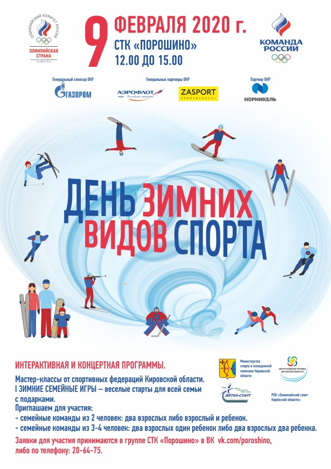

МБУ СШ № 2
| |||||||||
| Слабовидящим Обычный |
Обьявления
09 февраля 2020 года День зимних видов спорта

05 октября 2019 года ВСЕРОССИЙСКИЙ ДЕНЬ ХОДЬБЫ
05 октября 2019 года пройдет Всероссийский день ходьбы в рамках Всемирного дня ходьбы Международной ассоциации «Спорт для всех». Главной задачей Всероссийского дня ходьбы являе6тся популяризация ходьбы как наиболее естественного и доступного вида физической активности, идеально подходящего для поддержания здоровья и физической формы.
Главной задачей Всероссийского дня ходьбы являе6тся популяризация ходьбы как наиболее естественного и доступного вида физической активности, идеально подходящего для поддержания здоровья и физической формы.
Всемирный день ходьбы во всем мире проводится уже более 25 лет. Ежегодно в нем участвуют десятки миллионов человек в сотнях городов планеты.
В России Всероссийский день ходьбы проходит с 2015 года при поддержке Олимпийского комитета России
Участниками Всероссийского дня ходьбы могут быть самые разные категории граждан, как по возрасту, та и по профессиональной принадлежности: дети, юноши, взрослые, люди пожилого возраста, родители с детьми, новички в спорте и профессиональные спортсмены, люди с ограниченными возможностями.
Всероссийский день ходьбы будет проходить года в городе Кирове
на базе спортивно-туристического комплекса «Порошино» по адресу: Кировская обл., г. Киров, с. Порошино.Контактный телефон-
8-964-250-51-70 – Олюнина Светлана Петровна
Информационные материалы к Всемирному дню инсульта о факторах риска развития инсульта, правилах поведения в ситуации подозрения на инсульт
О всемирном дне борьбы с раком молочной железы
Лучшие работы Международного молодежного конкурса социальной антикоррупционной рекламы "Вместе против коррупции!"